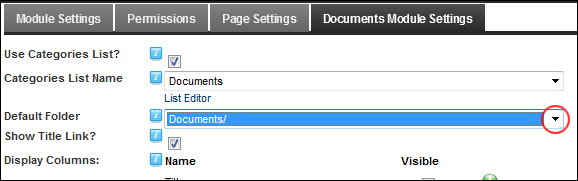

Setting the Default Folder for Documents
How to set the default folder for documents being added to the Documents module. This setting pre-populates the Link - File Location field on the Edit Documents page with the selected folder. This setting does not restrict users selecting other folders.
The default folder must have the correct Folder Security Settings granted in the Digital Asset Management module located on the Admin > File Management page. See "About Folder Security Settings". In DNN Platform, users who can view the module must be granted 'Open Files in Folder' permission to the folder. Module Editors can be granted either 'Open Files in Folder', 'Browse Files in Folder' or 'Write To Folder' permissions depending on your requirements. In Evoq Content and Evoq Content Enterprise, users who can view the module must be granted 'View' permission to the folder. Module Editors can be granted either 'Browse Folder', 'View' or 'Add' permissions depending on your requirements.
-
- Select the Documents Module Settings tab.
- At Default Folder, select a folder name from the drop down list. E.g. Documents. The default option is typically the Root folder.

-
Click the OK button to confirm.